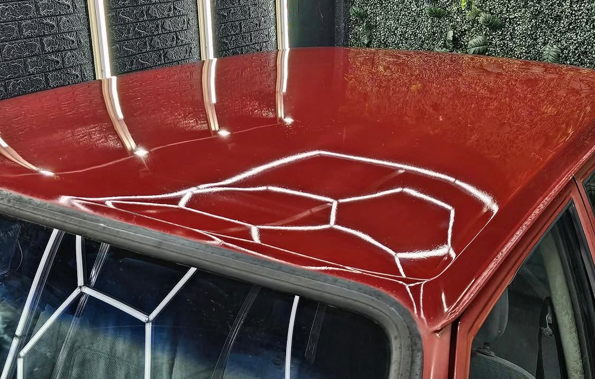
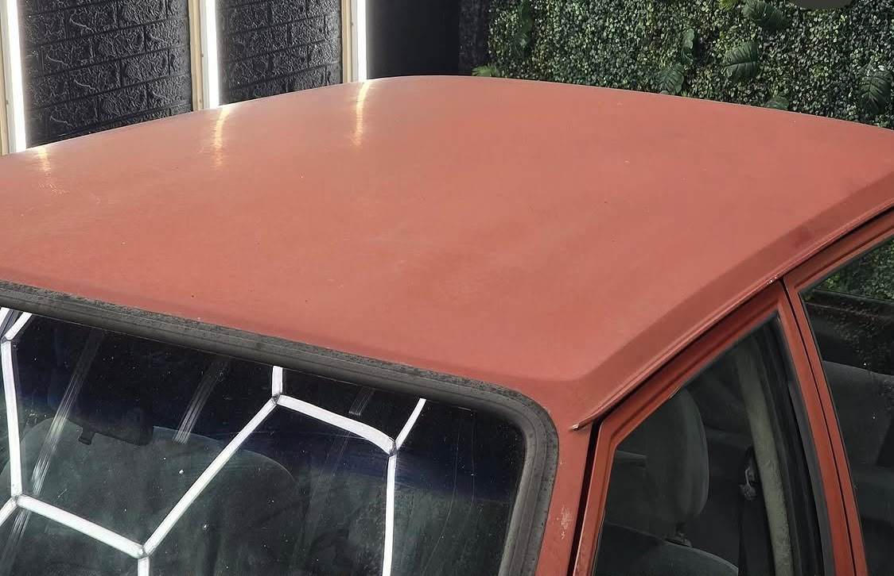
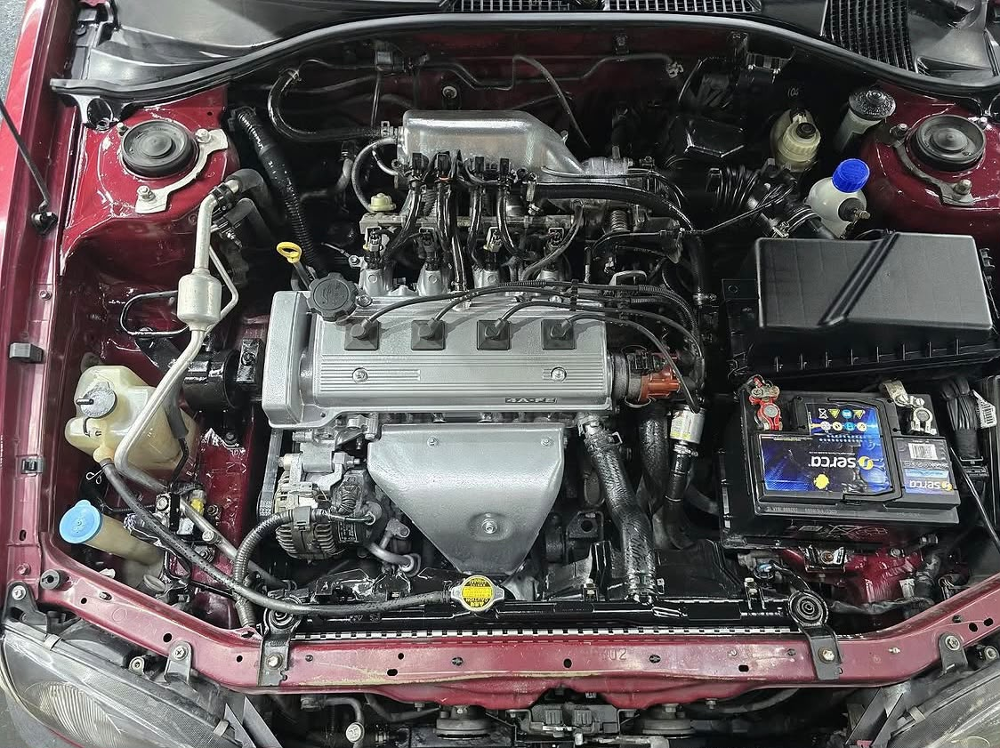
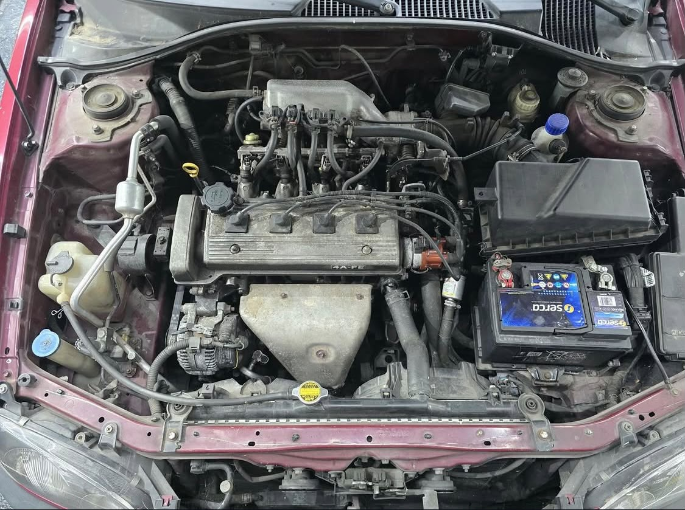
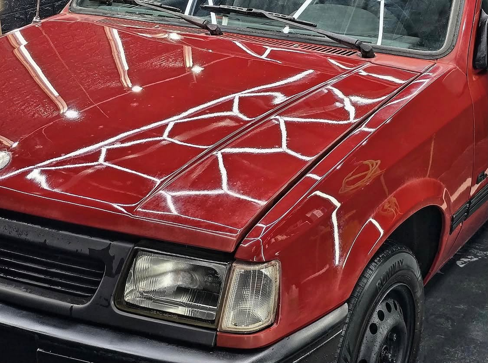

01 — EXTERIOR & INTERIOR
Lavado
Personalizado
Uma limpeza cuidada para manter o automóvel à altura de cada viagem.
Pedir informaçõesMais do que cuidar do seu automóvel. Revelar todo o seu potencial, com rigor em cada acabamento.
Na KEAUTOS CARSTUDIO, cada automóvel recebe a atenção que o distingue. Da lavagem personalizada à correção de pintura, trabalhamos para recuperar a presença, o brilho e o prazer de conduzir.
Serviços adaptados ao estado e às necessidades do seu automóvel. Todos realizados por marcação.
Uma limpeza cuidada para manter o automóvel à altura de cada viagem.
Pedir informaçõesUm trabalho de detalhe para elevar o acabamento e revelar a profundidade da pintura.
Pedir informaçõesValores indicativos. O orçamento final depende do estado e das características do automóvel.
Arraste a linha para comparar. As imagens mostram trabalhos reais realizados no estúdio.




Brilho, profundidade e atenção às zonas que fazem a diferença.

O cuidado começa antes do primeiro toque e só termina quando cada detalhe está no lugar.
Atendimento por marcação, com atenção às necessidades de cada veículo.
Um olhar atento à pintura, aos reflexos e aos pormenores que contam.
Uma recomendação ajustada ao estado do automóvel e ao resultado pretendido.
Trabalhos reais que mostram o impacto de um cuidado feito com rigor.
Conte-nos o que procura e envie informações sobre o automóvel.
Avaliamos o pedido e indicamos o serviço mais adequado.
Combinamos uma data para receber o seu automóvel em Vagos.
Tratamos cada detalhe e entregamos o trabalho concluído.
Sim. O atendimento é feito por marcação para reservar o tempo necessário a cada automóvel.
Sim. Entre em contacto, indique o serviço pretendido e partilhe informações sobre o automóvel para receber uma indicação adequada.
A KEAUTOS CARSTUDIO está na zona de Vagos, Aveiro. Contacte-nos para combinar a visita e confirmar a localização.
Lavagem personalizada, pulitura e cardetail. Fale connosco para avaliar o trabalho mais adequado ao seu carro.
Depende do serviço e do estado do automóvel. O prazo é confirmado no momento da marcação.
Conte-nos o que o seu automóvel precisa. Nós tratamos dos detalhes.
Pedir orçamento no WhatsApp 923 129 916VAGOS / AVEIRO · ATENDIMENTO POR MARCAÇÃO